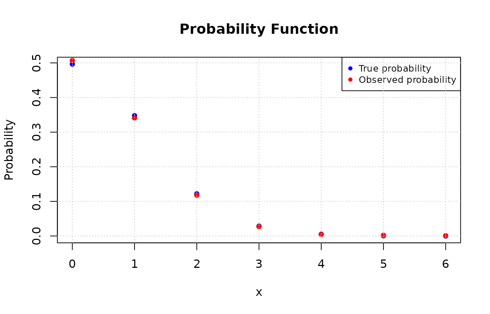
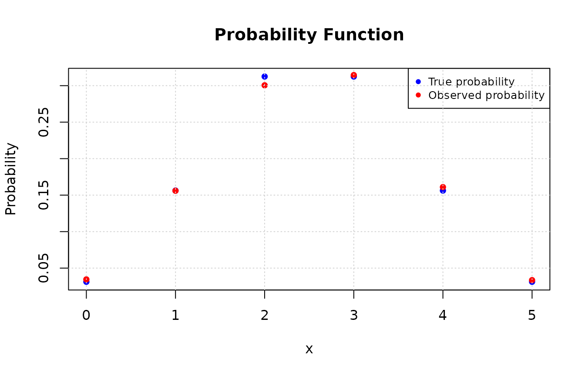
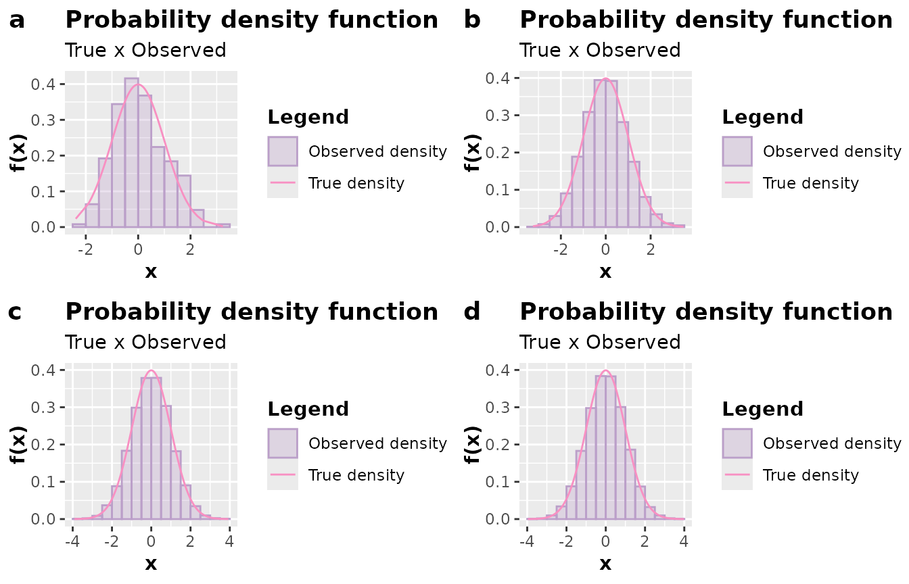
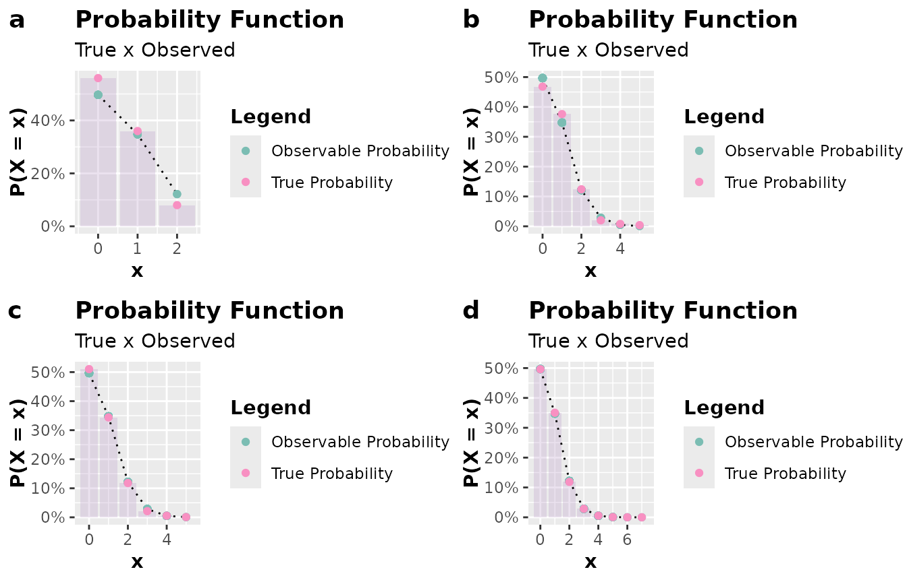
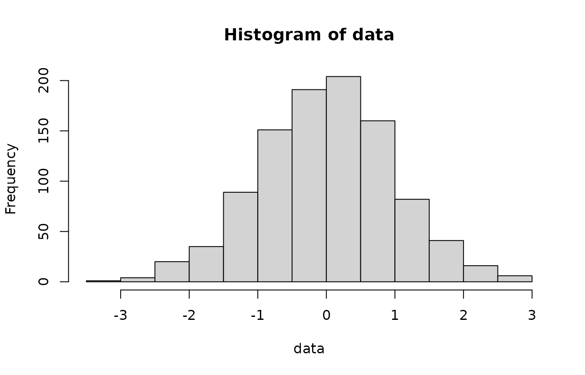

Understanding the Method
In situations where we cannot use the inversion method (situations where obtaining the quantile function is not possible) and neither do we know a transformation involving a random variable from which we can generate observations, we can make use of the acceptance-rejection method.
Suppose \(X\) and \(Y\) are random variables with probability density function (pdf) or probability function (pf) \(f\) and \(g\), respectively. Furthermore, suppose there exists a constant \(c\) such that
\[\frac{f(x)}{g(y)} \leq c,\] for every value of \(x\), with \(f(x) > 0\). To use the acceptance-rejection method to generate observations of the random variable \(X\), using the algorithm below, first find a random variable \(Y\) with pdf or pf \(g\), such that it satisfies the above condition.
Important:
It is important that the chosen random variable \(Y\) is such that you can easily generate its observations. This is because the acceptance-rejection method is computationally more intensive than more direct methods such as the transformation method or the inversion method, which only requires the generation of pseudo-random numbers with a uniform distribution.
Algorithm of the Acceptance-Rejection Method:
1 - Generate an observation \(y\) from a random variable \(Y\) with pdf/pf \(g\);
2 - Generate an observation \(u\) from a random variable \(U\sim \mathcal{U} (0, 1)\);
3 - If \(u < \frac{f(y)}{cg(y)}\) accept \(x = y\); otherwise reject \(y\) as an observation of the random variable \(X\) and go back to step 1.
Proof: Consider the discrete case, that is, \(X\) and \(Y\) are random variables with pfs \(f\) and \(g\), respectively. By step 3 of the algorithm above, we have \(\{accept\} = \{x = y\} = u < \frac{f(y)}{cg(y)}\). That is,
\[P(accept | Y = y) = \frac{P(accept \cap \{Y = y\})}{g(y)} = \frac{P(U \leq f(y)/cg(y)) \times g(y)}{g(y)} = \frac{f(y)}{cg(y)}.\] Hence, by the Law of Total Probability, we have:
\[P(accept) = \sum_y P(accept|Y=y)\times P(Y=y) = \sum_y \frac{f(y)}{cg(y)}\times g(y) = \frac{1}{c}.\] Therefore, by the acceptance-rejection method, we accept the occurrence of \(Y\) as an occurrence of \(X\) with probability \(1/c\). Moreover, by Bayes’ Theorem, we have
\[P(Y = y | accept) = \frac{P(accept|Y = y)\times g(y)}{P(accept)} = \frac{[f(y)/cg(y)] \times g(y)}{1/c} = f(y).\] The result above shows that accepting \(x = y\) by the algorithm’s procedure is equivalent to accepting a value from \(X\) that has pf \(f\). For the continuous case, the proof is similar.
Important:
Notice that to reduce the computational cost of the method, we should choose \(c\) in such a way that we can maximize \(P(accept)\). Therefore, choosing an excessively large value of the constant \(c\) will reduce the probability of accepting an observation from \(Y\) as an observation of the random variable \(X\).
Note:
Computationally, it is convenient to consider \(Y\) as a random variable with a uniform distribution on the support of \(f\), since generating observations from a uniform distribution is straightforward on any computer. For the discrete case, considering \(Y\) with a discrete uniform distribution might be a good alternative.
Installation and loading the package
The AcceptReject package is available on CRAN and can be
installed using the following command:
install.packages("AcceptReject")
# or
install.packages("remotes")
remotes::install_github("prdm0/AcceptReject", force = TRUE)
# Load the package
library(AcceptReject)Using the accept_reject Function
Among various functions provided by the AcceptReject library, the
acceptance_rejection function implements the acceptance-rejection
method. The AcceptReject::accept_reject() function has the
following signature:
accept_reject(
n = 1L,
continuous = TRUE,
f = dweibull,
args_f = list(shape = 1, scale = 1),
xlim = c(0, 100),
c = NULL,
linesearch_algorithm = "LBFGS_LINESEARCH_BACKTRACKING_ARMIJO",
max_iterations = 1000L,
epsilon = 1e-06,
start_c = 25,
parallel = FALSE,
...
)Many of the arguments the user will not need to change, as the
AcceptReject::accept_reject() function already has default
values for them. However, it is important to note that the f argument is
the probability density function (pdf) or probability function (pf) of
the random variable \(X\) from which
observations are desired to be generated. The args_f
argument is a list of arguments that will be passed to the f function.
The c argument is the value of the constant c
that will be used in the acceptance-rejection method. If the user does
not provide a value for c, the
AcceptReject::accept_reject() function will calculate the
value of c that maximizes the probability of accepting
observations from \(Y\) as observations
from \(X\).
Note:
zmpg::acceptance_rejection() function can work in a
parallelized manner on Unix-based operating systems. If you use
operating systems such as Linux or MacOS, you can benefit from
parallelization of the zmpg::acceptance_rejection()
function. To do this, simply set the parallel = TRUE
argument. In Windows, parallelization is not supported, and setting the
parallel = TRUE argument will have no effect.
You do not need to define the c argument when using the
AcceptReject::accept_reject() function. By default, if
c = NULL, the AcceptReject::accept_reject()
function will calculate the value of c that maximizes the
probability of accepting observations from \(Y\) as observations from \(X\). However, if you want to set a value
for c, simply pass a value to the c
argument.
Details of the optimization of c:
c can be a
difficult optimization process, but generally, it is not. Therefore,
unless you have reasons to set a value for c, it is
recommended to use the default value c = NULL. For very
complicated functions, you may choose a sufficiently large
c to ensure that the method works well.
The arguments linesearch_algorithm,
max_iterations, epsilon, start_c,
and ... are arguments that control the optimization
algorithm of the c value. The
linesearch_algorithm argument is the line search algorithm
that will be used in the optimization of the c value. The
max_iterations argument is the maximum number of iterations
that the optimization algorithm will perform. The epsilon
argument is the stopping criterion of the optimization algorithm. The
start_c argument is the initial value of c
that will be used in the optimization algorithm. These are arguments
passed to the lbfgs::lbfgs() function, and generally, you
will not need to change them.
Examples
Below are some examples of using the
AcceptReject::accept_reject() function to generate
pseudo-random observations of discrete and continuous random variables.
It should be noted that in the case of \(X\) being a discrete random variable, it is
necessary to provide the argument continuous = FALSE,
whereas in the case of \(X\) being
continuous (the default), you must consider
continuous = TRUE.
Generating discrete observations
As an example, let \(X \sim Poisson(\lambda
= 0.7)\). We will generate \(n =
1000\) observations of \(X\)
using the acceptance-rejection method, using the
AcceptReject::accept_reject() function. Note that it is
necessary to provide the xlim argument. Try to set an upper
limit value for which the probability of \(X\) assuming that value is zero or very
close to zero. In this case, we choose xlim = c(0, 20),
where dpois(x = 20, lambda = 0.7) is very close to zero
(1.6286586^{-22}).
library(AcceptReject)
#>
#> Attaching package: 'AcceptReject'
#> The following object is masked from 'package:stats':
#>
#> qqplot
# Ensuring Reproducibility
set.seed(0)
# Generating observations
data <- AcceptReject::accept_reject(
n = 1000L,
f = dpois,
continuous = FALSE,
args_f = list(lambda = 0.7),
xlim = c(0, 20),
parallel = FALSE
)
# Viewing organized output with useful information
print(data)
#>
#> ── Accept-Reject Samples ───────────────────────────────────────────────────────
#> ℹ It's not necessary, but if you want to extract the observations, use as.vector().
#> ✔ Case: discrete
#> ✔ Number of observations: 1000
#> ✔ c: 38.2549
#> ✔ Probability of acceptance (1/c): 0.0261
#> ✔ Observations: 0 0 0 1 2 1 0 0 1 0...
#> ✔ xlim = 0 20
#>
#> ────────────────────────────────────────────────────────────────────────────────
# Calculating the true probability function for each observed value
values <- unique(data)
true_prob <- dpois(values, lambda = 0.7)
# Calculating the observed probability for each value in the observations vector
obs_prob <- table(data) / length(data)
# Plotting the probabilities and observations
plot(values, true_prob, type = "p", pch = 16, col = "blue",
xlab = "x", ylab = "Probability", main = "Probability Function")
# Adding the observed probabilities
points(as.numeric(names(obs_prob)), obs_prob, pch = 16L, col = "red")
legend("topright", legend = c("True probability", "Observed probability"),
col = c("blue", "red"), pch = 16L, cex = 0.8)
grid()
Note that it is necessary to specify the nature of the random
variable from which observations are desired to be generated. In the
case of discrete variables, the argument continuous = FALSE
must be passed.
Now, consider that we want to generate observations from a random variable \(X \sim Binomial(n = 5, p = 0.7)\). Below, we will generate \(n = 2000\) observations of \(X\).
library(AcceptReject)
# Ensuring reproducibility
set.seed(0)
# Generating observations
data <- AcceptReject::accept_reject(
n = 2000L,
f = dbinom,
continuous = FALSE,
args_f = list(size = 5, prob = 0.5),
xlim = c(0, 20),
parallel = FALSE
)
# Viewing organized output with useful information
print(data)
#>
#> ── Accept-Reject Samples ───────────────────────────────────────────────────────
#> ℹ It's not necessary, but if you want to extract the observations, use as.vector().
#> ✔ Case: discrete
#> ✔ Number of observations: 2000
#> ✔ c: 38.2549
#> ✔ Probability of acceptance (1/c): 0.0261
#> ✔ Observations: 2 2 3 3 3 3 2 3 2 3...
#> ✔ xlim = 0 20
#>
#> ────────────────────────────────────────────────────────────────────────────────
# Calculating the true probability function for each observed value
values <- unique(data)
true_prob <- dbinom(values, size = 5, prob = 0.5)
# Calculating the observed probability for each value in the observations vector
obs_prob <- table(data) / length(data)
# Plotting the probabilities and observations
plot(values, true_prob, type = "p", pch = 16, col = "blue",
xlab = "x", ylab = "Probability", main = "Probability Function")
# Adding the observed probabilities
points(as.numeric(names(obs_prob)), obs_prob, pch = 16L, col = "red")
legend("topright", legend = c("True probability", "Observed probability"),
col = c("blue", "red"), pch = 16L, cex = 0.8)
grid()
Generating continuous observations
To expand beyond examples of generating pseudo-random observations of
discrete random variables, consider now that we want to generate
observations from a random variable \(X \sim
\mathcal{N}(\mu = 0, \sigma^2 = 1)\). We chose the normal
distribution because we are familiar with its form, but you can choose
another distribution if desired. Below, we will generate
n = 2000 observations using the acceptance-rejection
method. Note that continuous = TRUE.
library(AcceptReject)
# Ensuring reproducibility
set.seed(0)
# Generating observations
data <- AcceptReject::accept_reject(
n = 2000L,
f = dnorm,
continuous = TRUE,
args_f = list(mean = 0, sd = 1),
xlim = c(-4, 4),
parallel = FALSE
)
# Viewing organized output with useful information
print(data)
#>
#> ── Accept-Reject Samples ───────────────────────────────────────────────────────
#> ℹ It's not necessary, but if you want to extract the observations, use as.vector().
#> ✔ Case: continuous
#> ✔ Number of observations: 2000
#> ✔ c: 25
#> ✔ Probability of acceptance (1/c): 0.04
#> ✔ Observations: -0.9409 0.7965 0.4243 -0.179 0.599 -0.3794 0.0035 0.3812 1.694 0.081...
#> ✔ xlim = -4 4
#>
#> ────────────────────────────────────────────────────────────────────────────────
hist(
data,
main = "Generating Gaussian observations",
xlab = "x",
probability = TRUE,
ylim = c(0, 0.4)
)
x <- seq(-4, 4, length.out = 500L)
y <- dnorm(x, mean = 0, sd = 1)
lines(x, y, col = "red", lwd = 2)
legend("topright", legend = "True density", col = "red", lwd = 2)In the examples above, the graphs were built without using the
AcceptReject::plot() function. This is just to show that
you can manipulate the returning object using the
AcceptReject::accept_reject() function, that is, the class
object accept_reject.
However, the AcceptReject::plot() function can be used
to generate graphs in a simpler way. Below, an example of how to use the
AcceptReject::plot() function to generate the probability
density plot of the normal distribution. However, note that the
AcceptReject::plot() function makes the plotting task
simpler and more direct. See the following example:
library(AcceptReject)
library(cowplot) # install.packages("cowplot")
# Ensuring reproducibility
set.seed(0)
simulation <- function(n){
AcceptReject::accept_reject(
n = n,
f = dnorm,
continuous = TRUE,
args_f = list(mean = 0, sd = 1),
xlim = c(-4, 4),
parallel = FALSE
)
}
# Inspecting
a <- plot(simulation(n = 250L))
b <- plot(simulation(n = 2500L))
c <- plot(simulation(n = 25000L))
d <- plot(simulation(n = 250000L))
plot_grid(a, b, c, d, nrow = 2L, labels = c("a", "b", "c", "d"))
See another example, in the discrete case:
library(AcceptReject)
library(cowplot) # install.packages("cowplot")
# Ensuring Reproducibility
set.seed(0)
simulation <- function(n){
AcceptReject::accept_reject(
n = n,
f = dpois,
continuous = FALSE,
args_f = list(lambda = 0.7),
xlim = c(0, 20),
parallel = FALSE
)
}
a <- plot(simulation(25L))
b <- plot(simulation(250L))
c <- plot(simulation(2500L))
d <- plot(simulation(25000L))
plot_grid(a, b, c, d, nrow = 2L, labels = c("a", "b", "c", "d"))
Accessing metadata
The AcceptReject::accept_reject() function returns an
object of class accept_reject. When executing the
print() function on an object of this class, an organized
output will be shown. However, you can operate on this instance of the
accept_reject class as any atomic vector. In the example
below, notice that you can obtain a histogram with the
hist() function or check the size of the vector of
observations generated using the length() function.
library(AcceptReject)
data <- accept_reject(
n = 1000L,
f = dnorm,
continuous = TRUE,
args_f = list(mean = 0, sd = 1),
xlim = c(-4, 4)
)
# Creating a histogram
hist(data)
# Checking the size of the vector of observations
length(x)
#> [1] 500If you want to access some metadata, use the attr()
function. Check the list of attributes by doing:
library(AcceptReject)
data <- accept_reject(
n = 100L,
f = dnorm,
continuous = TRUE,
args_f = list(mean = 0, sd = 1),
xlim = c(-4, 4)
)
attributes(data)
#> $dim
#> [1] 100 1
#>
#> $class
#> [1] "accept_reject"
#>
#> $f
#> <partialised>
#> function (...)
#> f(mean = 0, sd = 1, ...)
#> <environment: 0x5635df716fc8>
#>
#> $args_f
#> $args_f$mean
#> [1] 0
#>
#> $args_f$sd
#> [1] 1
#>
#>
#> $c
#> [1] 25
#>
#> $continuous
#> [1] TRUE
#>
#> $xlim
#> [1] -4 4
# Accessing the value c
attr(data, "c")
#> [1] 25In any case, it is important to highlight that, in general, you will
not need to access these attributes. The greatest interest will be in
having access to the vector of observations generated. If you want to
access the observation values directly in an atomic vector in R without
attributes, without an organized printout, simply coerce the object
using the as.vector() function, as shown in the following
example:
library(AcceptReject)
data <- accept_reject(
n = 100L,
f = dnorm,
continuous = TRUE,
args_f = list(mean = 0, sd = 1),
xlim = c(-4, 4)
)
class(data)
#> [1] "accept_reject"
print(data)
#>
#> ── Accept-Reject Samples ───────────────────────────────────────────────────────
#> ℹ It's not necessary, but if you want to extract the observations, use as.vector().
#> ✔ Case: continuous
#> ✔ Number of observations: 100
#> ✔ c: 25
#> ✔ Probability of acceptance (1/c): 0.04
#> ✔ Observations: 0.1985 1.684 0.273 -1.2779 -1.6982 -0.82 -0.4333 0.1548 -0.1103 -0.501...
#> ✔ xlim = -4 4
#>
#> ────────────────────────────────────────────────────────────────────────────────
# Coercing the object into an atomic vector without attributes
data <- as.vector(data)
print(data)
#> [1] 0.19853714 1.68400472 0.27297236 -1.27789195 -1.69815440 -0.81995657
#> [7] -0.43331207 0.15479767 -0.11034613 -0.50104928 0.11907357 0.53833348
#> [13] 0.65937216 -1.07680823 -0.60167118 1.77737626 -1.54319260 -0.81523076
#> [19] 1.02921457 -0.11562066 1.09866322 1.27008217 -0.69545136 -0.28253562
#> [25] 0.06408453 0.33515361 1.59159215 -0.33169810 0.11602873 -0.49082571
#> [31] 0.02446084 -2.89226189 0.58729390 1.38218019 -0.94486148 -0.54905466
#> [37] 0.39958276 -0.93533867 0.31234235 1.39915643 1.44483098 0.83871561
#> [43] 0.32798322 1.22021233 -0.48713558 0.91206529 0.11689569 0.36313434
#> [49] -0.81670148 0.96150491 -0.13874147 0.51853487 1.40700707 -0.52408607
#> [55] -0.14711866 0.48950156 0.85823437 -0.89064802 0.52635724 -0.36671539
#> [61] -0.86935386 0.79653021 -0.74436529 0.60129225 0.42110091 0.32738987
#> [67] 0.56820063 0.23930671 -0.47147973 1.92246472 0.36439048 0.05322617
#> [73] -0.23675598 -1.55676159 -0.47666371 -2.23034512 1.05962174 -0.28899841
#> [79] -0.43227133 1.42349766 1.84075538 -2.01928399 0.40548820 0.77424370
#> [85] 0.90516555 1.06431170 -0.83429438 -1.33406662 1.36695063 0.32067664
#> [91] -2.21849215 0.15807229 0.19880634 0.36106371 0.48554930 -0.46516608
#> [97] 0.76701332 -1.39184940 1.01085362 -0.52030811Important:
You will not need to coerce the object of the
accept_reject class into an atomic vector with no
attributes unless you have a specific reason to do so. The object of the
accept_reject class is an atomic vector with attributes,
and you can operate on it like any atomic vector. Everything you can do
with an atomic vector, you can do with an object of the
accept_reject class.